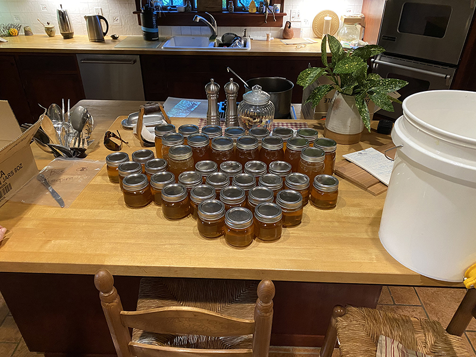

About Us

Our Story...
Debbie and Casey Reilly have been NJ beekeepers for almost three years now with a mission to help save the bees by advocating and teaching the importance of pollination. Without
bees, we would not enjoy nature's bounty of fruits and vegetables.
For Debbie and Casey , it all began when their son decided to move out of the country. Having only one child they didn't have much to do at home cause he wasn't around anymore.
That is when a friend decided to introduce them to bees and the art of making honey.
It wasn't long after this that they stared attending bee and honey making classes/seminars in their local town. Casey was always a advocate for any bugs or anything of that
nature and someone who always cared about the enviroment. They were right on track when it came to wanted to better themselves.
After taking classes for beekeeping, they made their first purchases of hives which they could be on the back section of their property. After buying and building these hives,
they made their first purchase of bees and got to work.
Soon after raising bee's for a while they had got all the equipment to produce honey from the bees that they have. Learning was no easy thing for them but in the first batch of
honey they did they produces well over 75 lbs of honey. Drinking tea with honey has always been a thing but this was too much honey for them and they didn't know what to do with it all.
They started shopping around and now they sell to local stores around town and people seem to be snatching it all right up when they can.
Something of a mere hobby turned into much more in such a short amount of time.